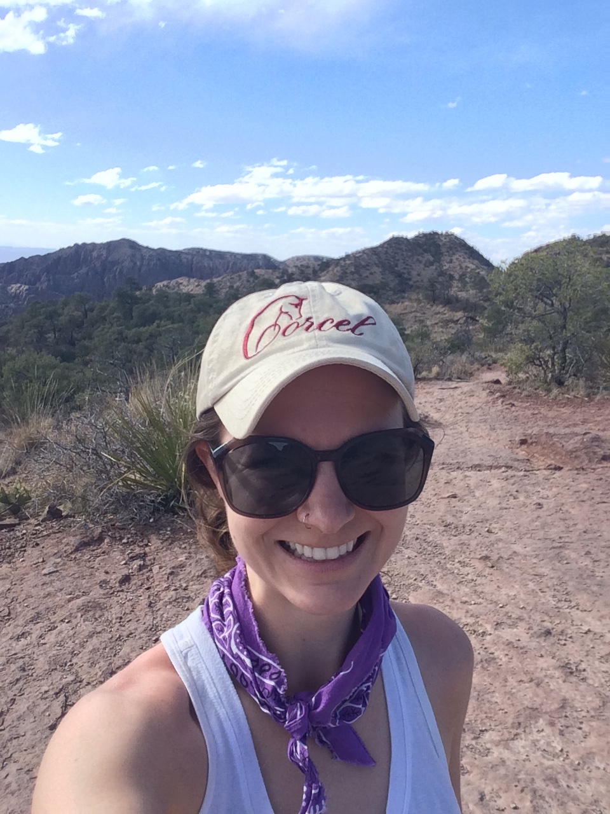

We are a think-tank style team that is working to understand the molecular level interactions between plants and their surrounding environment. Join us to test your ideas, products, and generate new directions of thinking for our continually expanding platform. Our current focuses are on regenerative agriculture and next-generation sustainable innovations!
Support our ongoing expedition here to collect real-time data on our Patreon page
Become part of our team! Email us under the contact section. We look forward to hearing from you! We are currently looking for:
- Scientists, engineers, mathematicians, and those who resonate with a strong sense of innovation and a think-tank style of idea generation.
- Interns: chemical engineering, mechanical engineering, biology, biochemistry, plant science, etc.
- Designer (website design, logo, etc.)
- Funding manager
- Research manager
The team
Katy N. Newlin
 My name is Katy Newlin. I am tenacious, curious, and have an insatiable appetite for procuring questions and seeking answers to fundamental science. I am an expert at harnessing molecular interactions to tune material properties for the design of therapeutics and bioscaffolds to solve health challenges.
I am a scientist with a doctorate in Chemical Engineering from the University of Houston under Peter Vekilov and Jeffrey Rimer. I then moved to Boston to expand myself with a postdoctoral position at MIT with Bob Langer and Dan Anderson. Following these academic adventures, I worked alongside teams to formulate extended release therapeutics at Alkermes, a pharmaceutical company, to address opioid addiction, Alzheimer’s, and Schizophrenia.
But I am bigger than this, than the labels that define me as there are grander components of the world and people to explore. I am here to redefine what it means to explore fundamental questions that continually intrigue me in order to create solutions for our world for a sustainable future where there are none.
Welcome to this small slice of my world, to a space where I invite you to come alive, to brainstorm with me, to share your experiences, to evoke the sensation of growing into something more than ourselves. A continual manifestation of ideas that allow us to move beyond social normalcy and explore the abnormalities that bring us to life, a life that exceeds our very expectations.